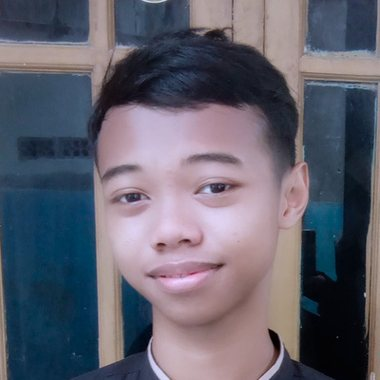

Video segera ditambahkan
Sistem Kamera Detector YOLO
Demo deteksi objek dari kamera.
Siswa Rekayasa Perangkat Lunak di SMKN 1 Karawang. Tertarik pada Computer Vision dan AI.
Saya siswa Rekayasa Perangkat Lunak di SMKN 1 Karawang. Saya pernah membuat sistem kamera detector dengan YOLO.

Tanjungpura, Karawang
muhammad.qidamalfahrizi@gmail.com
+62 896-7394-5474
Klik keahlian khusus untuk melihat penjelasannya.
Demo deteksi objek dari kamera.
Demo sistem dari project PKL.
Slot untuk proyek lain.
Tahan klik lalu seret untuk menggeser.